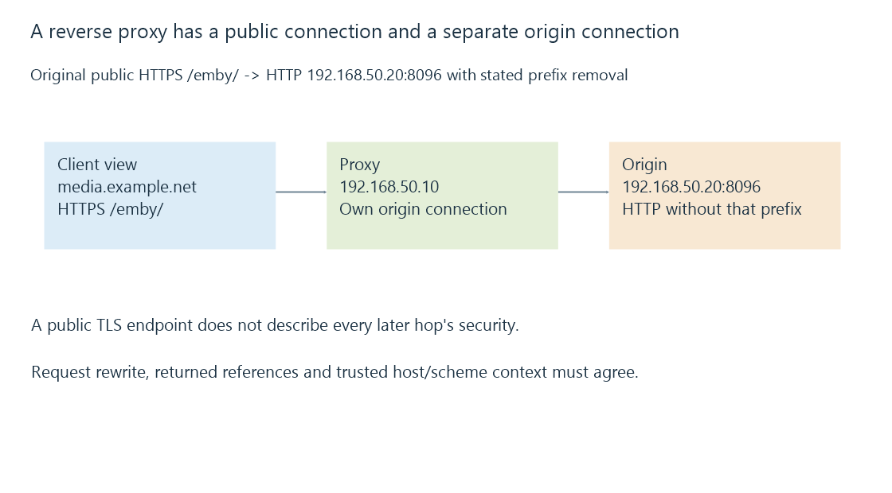

Reverse proxies and the two-sided server path
A reverse proxy accepts a public-facing application request and makes a separate upstream request, translating endpoint and resource context according to its configured policy.
A reverse proxy can accept a client connection at a public hostname and forward the application request to Emby through another endpoint.
There are two service-facing connections: client to proxy, and proxy to origin. Success on one side does not establish success on the other.
The public and upstream endpoints can differ
Use this original reduced arrangement:
{
"publicBase": "https://media.example.net/emby/",
"proxyAddress": "192.168.50.10",
"upstreamBase": "http://192.168.50.20:8096/",
"removeRequestPrefix": "/emby"
}
These fields describe a model, not executable proxy settings. The public connection uses HTTPS with its scheme-default port; the declared upstream connection uses another scheme and explicit port.

The proxy can perform TLS termination on the public side. The origin side has its own transport and security properties. Public HTTPS does not by itself describe every later hop.
The origin’s socket peer is the proxy’s upstream endpoint. Forwarded addresses can describe the earlier client only within the relevant trust policy.
Request paths need a consistent transformation
An original client request to /emby/api/item is transformed to /api/item under this model’s stated prefix removal.
That works only if the origin expects that path. Retaining the prefix would produce another upstream resource name.
The application can also have its own base-path behavior. Applying both an application prefix and an incompatible proxy rewrite can duplicate or remove path segments unexpectedly.
A successful first page can hide the problem until a later media, script or API URL uses another form.
Response references need the public base too
Consider three generic references in a response, resolved against https://media.example.net/emby/:
| Returned reference | Client destination path |
|---|---|
| login | /emby/login |
| /login | /login |
| http://192.168.50.20:8096/login | A different explicit origin |
The client resolves those references; it does not know that the proxy administrator intended the /emby prefix.
An absolute inside address can be unusable from outside. A root-relative link can leave the public prefix. A hostname-correct redirect can still choose an unintended scheme or port.
URL structure explains that resolution. Proxy redirect rewriting and the application’s original-host/base-URL interpretation must describe a coherent public service.
Request headers describe another context
A proxy can send an upstream Host value reflecting the public host or its chosen origin arrangement. Forwarded metadata can describe an original scheme, host or client address.
The origin should interpret that context according to the actual trusted proxy path. A client-written header is not evidence that the request traversed the intended proxy.
Emby’s network settings include a reverse-proxy secure-connection mode and header interpretation. The relevant application behavior must match the configured forwarding design, rather than assuming any header creates the needed route.
Long-lived or upgraded operations have their own forwarding behavior
A proxy that returns a small ordinary HTTP response can still handle streaming, range requests or an upgraded connection differently.
WebSocket proxying, for example, involves specific handling for the upgrade and hop-by-hop headers. It is not guaranteed by serving the web app’s initial HTML successfully.
Likewise, buffering and timeout clocks govern progress over the separate sides. These can explain an operation that starts correctly and later stalls.
See Also
- Hostnames, URLs and the complete server endpoint
- Forwarded client addresses and trusted proxy context
- Proxy buffering, progress and timeout clocks
- Port forwarding and the complete inbound path